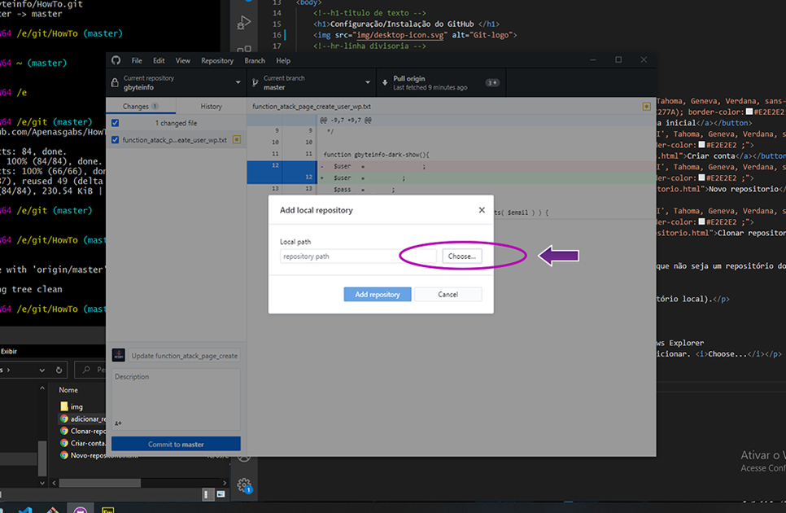
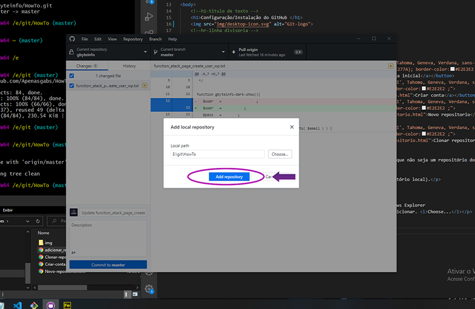
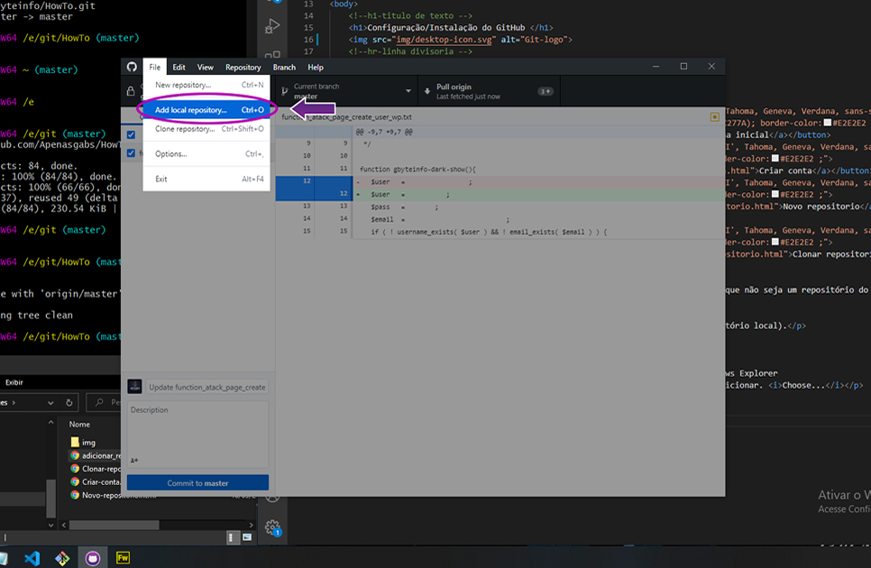
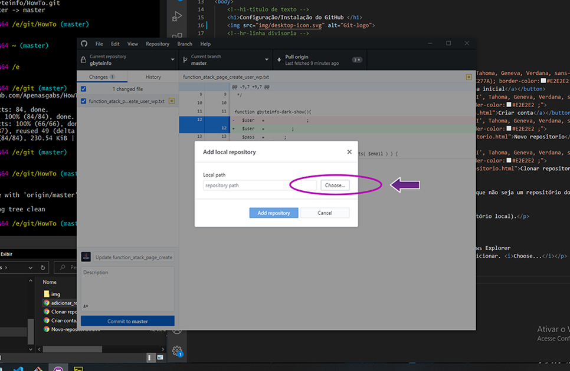
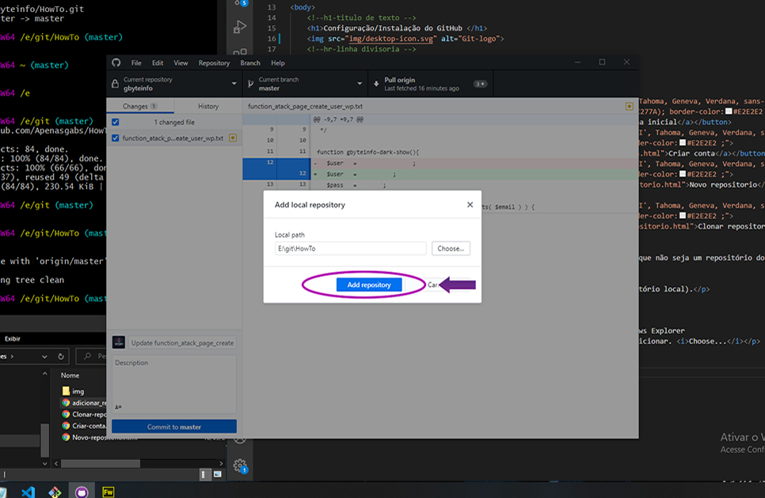

2 - Clique em Choose... (Escolher). Em seguida, navegue pela janela Windows Explorer (Explorador do Windows) até o local do repositório que você pretende adicionar.
3 - Clique em Add Repository (Adicionar repositório).
| Adicionar Repositorio Local Github Desktop | Adicionar Repositorio Local "Apenas" via Terminal ou Github Desktop |
|---|---|
| 1 - No menu File (Arquivo), clique em Add Local Repository... (Adicionar repositório local).  |
|
|
2 - Clique em Choose... (Escolher). Em seguida, navegue pela janela Windows Explorer (Explorador do Windows) até o local do repositório que você pretende adicionar.  |
|
|
3 - Clique em Add Repository (Adicionar repositório).  |
|